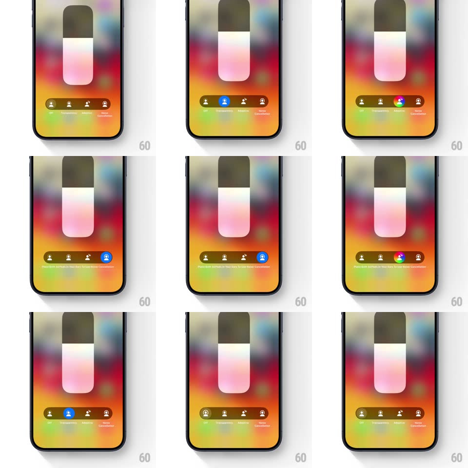

Media
Frame-by-frame

Rebuild this interaction 1:1: iOS's AirPods Pro noise control - the long-press volume card with a four-mode segmented control (Off, Transparency, Adaptive?, Noise Cancellation) where the selection pill glides liquidly between modes with color morphing, and drags past the ends get a rubbery rejection bounce.

Rebuild this interaction 1:1: iOS's AirPods Pro noise control - the long-press volume card with a four-mode segmented control (Off, Transparency, Adaptive?, Noise Cancellation) where the selection pill glides liquidly between modes with color morphing, and drags past the ends get a rubbery rejection bounce. ## Integration Integration: stack-agnostic spec - springs given as stiffness/damping, timed motions as duration + curve; map every value to your framework and animation library of choice. ## Scene A tall AirPods volume card (earbuds glyph, "AirPods Pro" label) over a blurred rainbow-gradient backdrop; below it a horizontal dark segmented strip of four mode icons (power-off, transparency, adaptive, noise-cancellation) with labels beneath; the active mode carries a blue (or multicolor for adaptive) filled pill. ## Motion spec Pattern: liquid segmented control with edge rejection. - Mode change (tap or slide): the selection pill morphs liquidly - it squashes toward the target (stretching horizontally up to 1.4x mid-travel, spring ~300/18) and slides under the new icon, its fill cross-blending colors (blue -> multicolor adaptive -> blue). - The newly active icon lifts and fills white while the old one dims (200ms); labels crossfade below. - Drag the pill and it tracks the finger with slight lag (60ms), modes snapping under it with a soft tick as each threshold crosses. - Past the first/last mode: the pill stretches against a rubber limit (max 24px, damping rises quadratically) and on release bounces back (spring ~380/14) - a felt refusal. - The volume slider above responds to mode changes with a 300ms shimmer sweep across its fill. ## Calibration - Pill travel between adjacent modes ~70px; the squash-stretch peaks at 50% of travel. - Every mode commit fires a light haptic; the edge rejection fires a rigid double-tick. ## Reduced motion Pill crossfades between modes; no squash, no rubber bounce. ## Don't miss - The pill is liquid, not a sliding rectangle - its deformation during travel is the signature. - Edge rejection is playful, not an error: bounce, never shake.